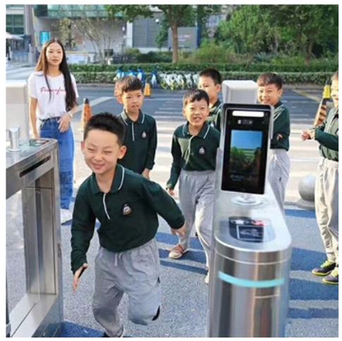
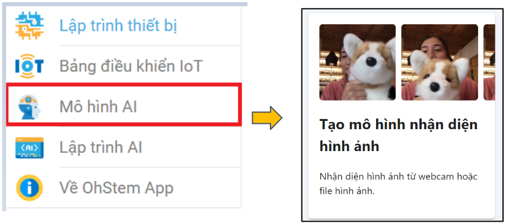
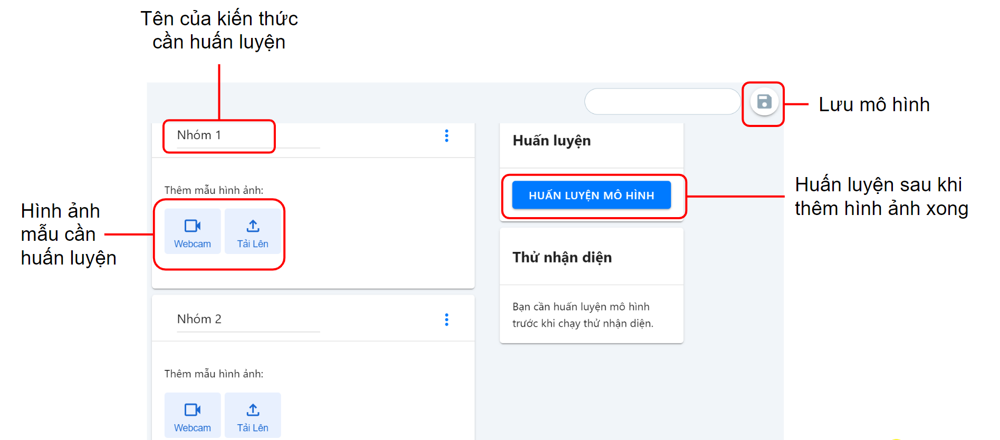
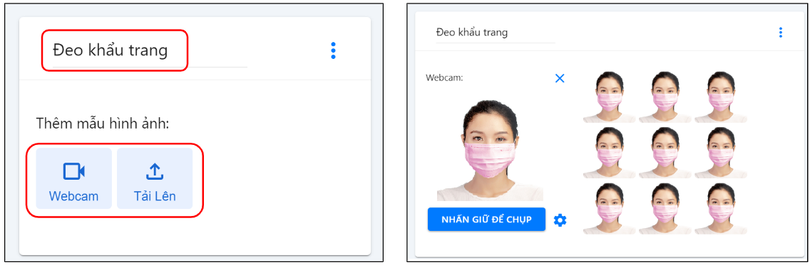
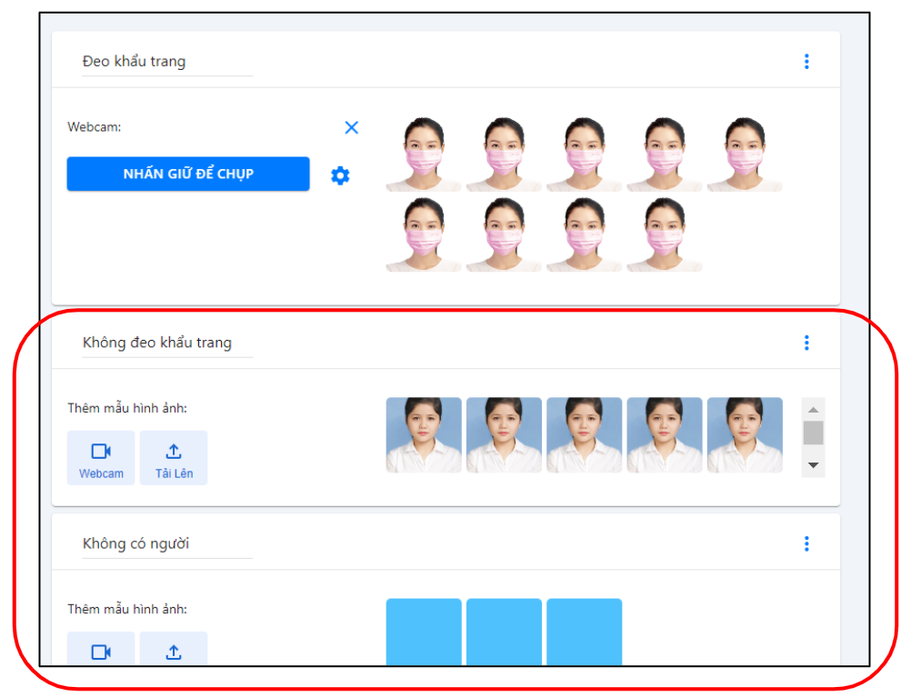
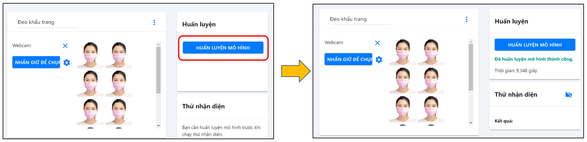
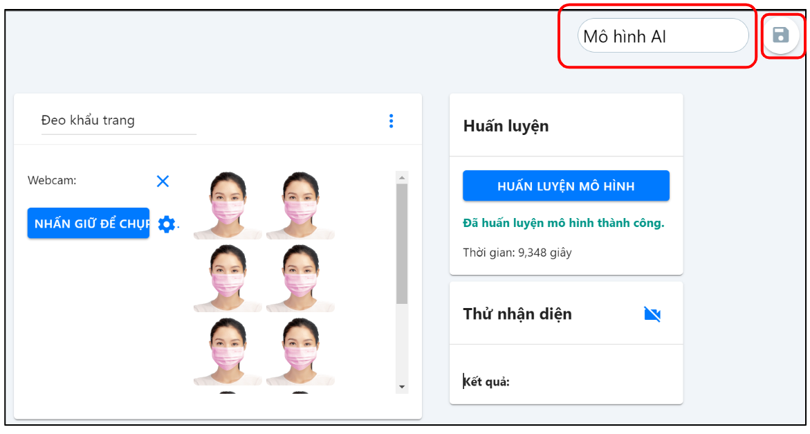
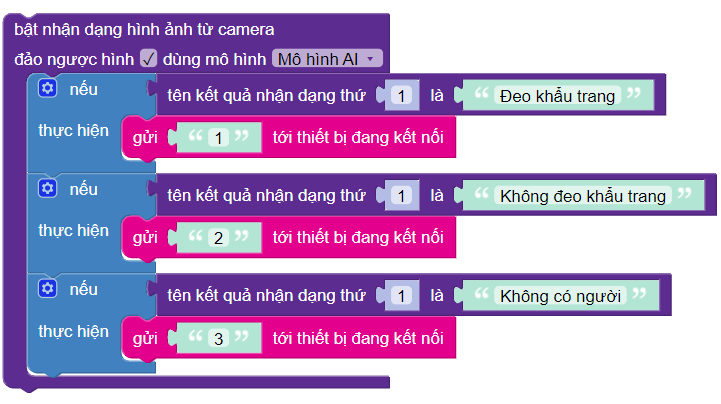

21. Bài 17: Lập trình AI - Điều khiển bằng cử chỉ
Mục tiêu
Làm quen công nghệ nhận dạng hình ảnh trong thực tế
Nắm được quy trình huấn luyện mô hình AI
Thực hành huấn luyện mô hình AI
Ứng dụng vào lập trình điều khiển robot
{kind=link}
Giới thiệu về Công nghệ nhận dạng hình ảnh
Giúp tạo ra nhiều ứng dụng hữu ích trong thực tế:
Mở khóa thiết bị thông minh
Nhận dạng tội phạm tại nơi công cộng:

Điểm danh học sinh đến lớp và nhiều ứng dụng khác
{kind=link}
{kind=link}
{kind=link}
Giới thiệu khối lệnh
Khối lệnh Bật Camera trên thiết bị (có thể chọn camera trước / selfi).
Khối lệnh chức năng nhận diện bằng AI, đây là câu lệnh có thể chọn lựa và chúng ta cần chọn đúng mô hình AI đã huấn luyện ở phần trước.
Khối lệnh đổi hình nền sang màu trắng để xóa kết quả nhận dạng trước đó.
{kind=link}
{kind=link}
{kind=link}
Quy trình huấn luyện mô hình AI
Quy trình huấn luyện mô hình AI gồm 4 bước:
Thu thập dữ liệu và gán nhãn (kiến thức)
Huấn luyện
Kiểm tra mô hình
Phân tích dữ liệu thực tế
Huấn luyện mô hình AI
Giao diện trang trí tuệ nhân tạo
{kind=link}
Huấn luyện hệ thống
Yêu cầu: Huấn luyện mô hình AI để nhận biết đeo khẩu trang và không đeo khẩu trang

Bước 1: Từ trang chủ, bạn chọn vào Mô hình AI, chọn tiếp Tạo mô hình nhận diện hình ảnh, như minh họa ở hình bên dưới:
Giao diện hiện ra có các chức năng như sau:

Bước 2: Với giao diện mới được hiện ra, bạn đặt tên cho kiến thức mà mình muốn huấn luyện, chẳng hạn như là Đeo Khẩu Trang, và nhấn tiếp vào nút WEBCAM/ Tải lên ở ngay bên dưới để lấy mẫu.
Lưu ý: Nhấn nút Nhấn giữ để chụp, chụp khoảng 30 - 40 hình cho một kiến thức.
Bước 3: Thực hiện tương tự cho kiến thức Không đeo khẩu trang và Không có người.
Thực ra, việc cung cấp kiến thức đúng cho hệ thống AI chỉ là một phần. Muốn nó nhận dạng chính xác, bạn cần phải cung cấp thêm kiến thức sai cho nó.
Tùy vào dự án, kiến thức sai này có thể rất đa dạng. Với dự án nhận diện đeo khẩu trang hay không đeo khẩu trang này, một kiến thức sai quan trọng là không có người, như minh hoạ ở hình bên dưới.

Bước 4: Chọn HUẤN LUYỆN MÔ HÌNH và chờ hệ thống huấn luyện

Bước 5: Đặt tên và nhấn lưu mô hình
Sau khi huấn luyện hệ thống xong, bạn trở về giao diện trang trí tuệ nhân tạo.
{kind=link}
{kind=link}
{kind=link}
{kind=link}
{kind=link}
{kind=link}
Hiện thực dự án AI
Yêu cầu: Lập trình để robot phát ra cảnh báo tương ứng:
Không đeo khẩu trang : Bật đèn LED màu đỏ
Đeo khẩu trang : Bật đèn LED màu xanh
Không có người : Tắt đèn LED
Bước 1: Từ màn hình chính của trang lập trình, lần này chúng ta sẽ chọn vào Lập trình AI, như minh họa ở hình bên dưới:
{kind=link}
Bước 2: Thực hiện các tính năng cơ bản để khởi động Camera và hiện hình ảnh từ Camera.
{kind=link}
Hiện tại, với phiên bản chạy trên máy tính, bạn đọc cần khởi động Camera trước. Với câu lệnh trong phần lặp mãi mãi, bạn hãy đảm bảo rằng mình đã chọn vào đảo ngược hình (do chúng ta đang sử dụng Camera trước của laptop). |
Bước 3: Hiện thực khối chức năng AI.
Chúng ta phân loại kết quả nhận dạng từ AI bằng các câu lệnh nếu, và gửi kết quả này xuống mạch Yolo:Bit cho những bước xử lý tiếp theo, như gợi ý ở phần bên dưới:
{kind=link}
Lệnh gửi tới thiết bị đang kết nối nằm trong nhóm lệnh GIAO TIẾP.
Lưu ý: Tên kiến thức phải chính xác 100% cả chữ hoa, chữ thường như đã khai báo trong mô hình AI
Bước 4: Hoàn thiện chương trình
{kind=link}
Thực thi dự án trên Robot
Xây dựng chương trình đổi màu đèn cho Rover.
Tương tự như hướng dẫn ở Bài 16 để hiện thực chương trình cho Rover, ở đây sẽ tóm tắt lại các bước chính cho việc hiện thực này như sau:
Hiện thực chương trình nhận lệnh cho thiết bị bằng cách khai báo thêm biến AI hình ảnh và xử lý chức năng với câu lệnh nếu … thực hiện.
Lưu chương trình vào thiết bị, RESET lại thiết bị nếu kết nối bằng USB.
Mở chương trình AI, kết nối lại với thiết bị, bằng USB hoặc Bluetooth. Trong trường hợp kết nối bằng USB, nên RESET lại thiết bị.
Chạy chương trình AI.
Khi hiện thực chương trình trên thiết bị, hãy luôn luôn tận dụng đèn của nó để hiện thị thêm thông tin ở phần bắt đầu. Đây là dấu hiệu nhận biết quan trọng để chúng ta biết rằng thiết bị đã RESET thành công và sẵn sàng cho việc kết nối với chương trình AI.
Chương trình hoàn chỉnh:
{kind=link}
Chương trình mẫu
Điều khiển robot bằng cử chỉ: Tại đây
{kind=link}